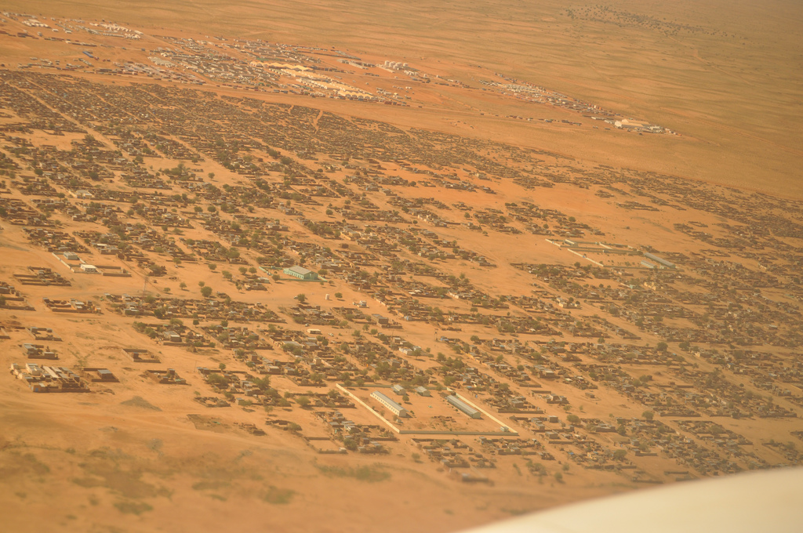

Sudan: If the Guns Stopped Tomorrow, What Would People Return To?
Sudan is no longer a war with a humanitarian crisis attached. With almost 34 million people in need, the question is not only how to stop the fighting, but what people would return to.

1. Executive judgement
Sudan is no longer a war with a humanitarian crisis attached. It is a humanitarian catastrophe reshaping the country itself, while the war is locked in a divided stalemate. Almost 34 million people need humanitarian support, according to OCHA figures cited at the Geneva talks on 21 October 2026. Famine has been confirmed in besieged towns, hunger is rising again in Darfur and Kordofan, and more than 8.5 million people remain displaced even as 5.27 million have returned to places that often cannot sustain them. The central question is therefore not only how to stop the fighting. It is whether communities can rebuild shared livelihoods across the lines this war has cut through markets, grazing land and water points, or whether displacement hardens into permanent partition.
2. The catastrophe today
Displacement, out and back at the same time
Sudan remains the world's largest displacement crisis. IOM's Displacement Tracking Matrix, in its 18 October 2026 Snapshot, recorded an estimated 8,585,611 internally displaced people across all 18 states, alongside 5,273,334 returnees across nine states. Around 56 per cent of the displaced and half of returnees are children under 18.
Neighbouring countries host about 4.6 million refugees, asylum seekers and returnees from Sudan, according to the IFRC's revised regional strategy of 25 October 2026. UNHCR told the UN Geneva press briefing on 23 October 2026 that nearly 100,000 people had fled from El Fasher to Chad since the city fell a year earlier, and almost one million had crossed into Chad since April 2023. UNHCR also cites Government of Egypt figures of 1.5 million Sudanese who fled to Egypt. Sudan itself still hosts about 910,000 refugees, most of them South Sudanese, and UNHCR reported 324,631 crossings from South Sudan into Sudan between April 2025 and October 2026.
Returns have grown where fighting subsided, notably in Khartoum, Al Jazirah and Sennar. But return is a movement, not an outcome: OCHA's 2026 plan records landmine and explosive contamination across farmland, homes and roads in return areas, with 91 per cent of people surveyed in Aj Jazirah reporting contamination concerns. Without restoration, return becomes a second displacement waiting for its trigger.
Hunger and famine: what is confirmed, and what is now at risk
Precision matters, because famine is a technical classification, not a headline. The IPC Famine Review Committee confirmed famine conditions, IPC Phase 5 with reasonable evidence, in El Fasher and Kadugli, in the IPC Special Snapshot covering the period to September 2025 and reported by FAO, WFP and UNICEF.
The IPC's subsequent national analysis, published in June 2026, found that nearly 19.5 million people, about 41 per cent of the population, faced high levels of acute food insecurity, IPC Phase 3 or above, between February and May 2026, including more than 5 million in IPC Phase 4, Emergency, and about 135,000 in IPC Phase 5, Catastrophe. It classified no area in famine for that period, identified 14 areas in Darfur and South Kordofan at risk of famine under a worst case scenario, and noted data gaps prevented a full lean season projection.
The most recent signal is deterioration. On 12 October 2026, the IPC issued a Food Insecurity and Malnutrition Alert warning of a growing risk of famine across parts of Greater Darfur and Greater Kordofan, driven by conflict, mass displacement, severe drought and inadequate funding. An El Niño induced drought affecting roughly half the country is reducing food availability and driving up prices. Surveys in two South Darfur displacement camps recorded acute malnutrition at 38 per cent and 30.8 per cent, above the famine threshold. In Nyala, the share of children treated for severe acute malnutrition doubled from about 5 per cent to 11 per cent between January and August 2026. The Famine Review Committee said survey data remain insufficient for a full new analysis. Famine has been confirmed in specific besieged locations, not newly declared at national scale, and the October evidence points toward its return in the west if access and funding do not change.
Children: malnutrition, disease and a schooling collapse
The IPC estimates about 825,000 children under five are expected to suffer severe acute malnutrition in 2026, up 7 per cent on 2025 and 25 per cent above pre-conflict levels. UNICEF's Situation Report No. 46, covering August 2026, records that UNICEF supported treatment of 51,506 children with severe acute malnutrition in that period and reached 751,400 people with cholera outbreak response.
The education loss may prove the longest scar. UNICEF alerts cited at the Geneva talks on 21 October put the number of children out of school at eight million. In Darfur, Plan International reported on 26 October, citing UNICEF estimates, that 81 per cent of schools remain closed and 70 per cent of children are not attending classes. A child malnourished, displaced and out of school for a third consecutive year faces a changed life trajectory, and so does the country that will need her skills.
Women: holding households together under targeted risk
Women are the backbone of survival in displaced and besieged communities, and they are also being targeted. UNHCR's chief, Barham Salih, warned in October 2026 that insufficient funding in Sudan threatens specialised care and support for more than 50,000 survivors of conflict related sexual violence. OCHA's 2026 plan describes conflict related sexual violence in Sudan as rampant, including rape, gang rape, abduction, forced marriage and sexual slavery, used as a tactic to terrorise, often targeted along ethnicity or perceived affiliation.
The daily geography of fear is measurable. UN Women, presenting a survey of 50 women's organisations supporting people displaced from El Fasher on 23 October 2026, reported that 49 of the 50 had observed psychological distress among displaced women and girls, and nine in ten described unsafe living conditions. Citing IOM's 2026 Multi Sectoral Needs Assessment, UN Women noted that among surveyed households in El Fasher, 84 per cent said women now avoid marketplaces, two thirds avoid collecting firewood, and half avoid social, community or religious spaces. When women cannot safely reach a market, a water point or a field, a household's entire economy contracts. Maternal care has collapsed too: UN Women, citing the UN Fact Finding Mission, noted 80 per cent of hospitals in conflict affected areas were not functioning, contributing to increased maternal mortality. WHO counts 37 per cent of facilities nationwide no longer functioning by 2026, and has verified 228 attacks on health care since April 2023, causing 2,055 deaths. Different geographies, same system: one being dismantled.
Security drivers: a divided country and a drone war
The International Crisis Group, in its April 2026 briefing Divided Sudan, Elusive Peace, describes control divided between the army, which holds Khartoum, the central Nile corridor and the east including Port Sudan, and the RSF, which dominates most of Darfur with supply routes from Chad and Libya, with the main front lines in west central Kordofan. Both sides named rival governments in 2025, raising the risk of partition.
El Fasher is the emblem. Captured by the RSF in October 2025 after a long siege, the city a year later holds fewer than 70,000 people against a pre-war population of more than one million, according to figures gathered by humanitarian organisations and published by Amnesty International on 23 October 2026. The UN Fact Finding Mission concluded in February 2026 that the RSF campaign there bore the hallmarks of genocide, and the UN Human Rights Office has estimated more than 6,000 people killed in just three days during the takeover, as reported by Human Rights Watch on 26 October 2026. The Mission's October 2026 report on El Obeid describes a partially encircled city, expanding drone warfare, mass arrests and allegations of sexual violence against female detainees. OCHA's October reporting records drone strikes on markets, health facilities and power substations across Darfur, Kordofan, Khartoum and the east, and the reported killing of 11 people including nine children in Bir Saliba, West Darfur. This is what access denial now looks like: not only checkpoints, but strikes on the infrastructure that makes civilian life and aid delivery possible.
3. The deeper driver beneath the headlines
The obvious framing is two generals and two armies. It is true, and it is insufficient. The deeper driver is that this war is financed, supplied and prolonged from outside and from below at the same time. The International Crisis Group assesses that foreign powers backing opposing sides have helped both the army and the RSF rebuff mediators in the belief that they can win by attrition, and that the backers are locked in an escalation cycle. The Fact Finding Mission's September 2026 report, Fuelling Sudan's Conflict, reaches a similar conclusion on external support networks. A war that pays its way, through gold, trade routes and external supply, does not end because its human cost becomes unbearable. Its costs are exported onto civilians while its revenues sustain the fighting.
A second, quieter driver is internal. Control of land, grazing corridors, markets and local administration in Darfur and Kordofan has an ethnic and livelihood dimension that predates this war. Violence targeted along identity lines, from El Fasher to earlier attacks on camps such as Zamzam, is reshaping who can live where, who can farm, who can trade and who can return. A ceasefire alone will not restore the country. If the livelihood map is being redrawn by force, reconstruction must deliberately rebuild the conditions for coexistence, or it will rebuild over the fault lines.
4. The humanitarian system under strain
OCHA reported in late October 2026 that humanitarians reached more than 17 million people with at least one form of assistance in the first nine months of 2026, but only 3 million, 18 per cent of those reached, received multi sector assistance. Sudan's 2026 Humanitarian Needs and Response Plan, which seeks nearly 2.9 billion dollars, was just over 46 per cent funded, with 1.33 billion dollars received, according to OCHA's Humanitarian Action reporting. OCHA has warned that food and nutrition stocks risk running out by early next year. Underfunding at this level means ration cuts, closed facilities and triage between places that are all in emergency.
Access is the other half of the strain. Convoys are delayed, denied and attacked, workers surveilled and detained, and local responders, as OCHA's 2026 plan records, face attacks, detention and looting. Yet these responders have kept many communities alive. Refugees International's 22 October 2026 report on the Sudan Humanitarian Fund notes that its Emergency Response Room and Mutual Aid Group programme grew from 15 million dollars in 2024 to 25 million dollars in 2025 and 2026, while only about 6 per cent of Fund financing went directly to Sudanese actors in 2025, rising to about 27 per cent counting subgrants. The local model works. It is still funded as an exception rather than as the backbone.
5. The future: reconstructing intercommunity livelihoods
Reconstruction will not begin with a national conference. It will begin where people who fled each other must share a market, a water point, a road or a grazing corridor again. The work should be sequenced and measured.
Shared assets first. The most practical unit of reconstruction is the asset no community can use alone: markets, water yards, boreholes, veterinary posts, feeder roads and river crossings, used by farmers and herders, displaced and resident, returnee and host alike. Rehabilitating them jointly, with committees drawn from every user community, turns scarcity from a trigger of conflict into a reason to cooperate. Where violence subsided and markets recovered in Khartoum, Al Jazirah and Sennar, food security improved measurably, as WFP's famine analysis records.
Joint livelihood restoration. Seeds, tools, livestock restocking and cash for work should be designed across community lines from the start, not delivered to each group separately and labelled coexistence afterwards. Mixed producer groups, joint herder and farmer committees for corridor management, and shared savings groups create daily economic contact with rules attached. FAO's position is the right starting point: seeds, tools and livestock are lifelines. The design question is who restores production together.
Women and youth at the centre. Programmes that route resources only through established male leadership will reproduce the exclusions this war has deepened. Women run much of the survival economy, and women's organisations are among the most credible local responders, as UN Women's October 2026 survey shows. They should hold defined shares of committee seats, grant finance and market infrastructure, including safe market spaces. Young people, including Emergency Response Room volunteers, are the country's most experienced local response network. Reconstruction should employ that experience rather than bypass it.
Mediation tied to livelihoods. Land and resource disputes cannot be left to a separate, slower peace process while livelihood money flows around them. Every shared asset project should carry a local dispute mechanism: recognised community mediators, clear records of land and corridor agreements, and a route to escalate disputes before they turn violent. Explosive ordnance clearance is a precondition, given the contamination OCHA records in return areas.
Sequencing. In the first 0 to 6 months: protection and survival with a livelihood lens, meaning safe access, food and nutrition assistance, emergency seeds and livestock protection where planting windows allow, and no return programming that moves people faster than services and clearance can follow. From 6 to 18 months: shared assets and joint production, meaning market and water rehabilitation, corridor agreements before migration seasons, mixed cooperatives, and restored health and schooling. From 18 to 36 months: consolidation, meaning market systems, savings and credit, land documentation, and school reintegration for the eight million children out of class.
Risks and red lines. Three red lines should hold. No assistance conditioned on return to unsafe areas. No reconstruction finance routed in ways that reward armed actors for control of territory or taxation of aid. No intercommunity programme launched without a protection analysis showing it will not expose the weaker group to harm.
Indicators that trust is returning. Trust will not be announced. It will be visible: women returning to marketplaces they currently avoid, against the IOM measure that now records 84 per cent avoidance in El Fasher; shared committees meeting without external convening; herders and farmers using agreed corridors through a full migration season without armed escort; children returning to school across community lines; and local dispute mechanisms resolving land cases that are recorded and respected.
6. What to watch in the next 90 days
- Kadugli and Dilling. Whether access opens or the siege deepens in South Kordofan, and whether survey teams can operate.
- El Obeid and the Kordofan front line. Whether the partial encirclement tightens, and whether drone strikes on markets and power continue at October's tempo.
- The Chad border. Arrival rates at Adré and Tiné, and whether the flow into Chad accelerates again.
- The harvest and prices. Whether the drought hurt harvest eases prices after September's sharp rise in WFP's food basket, or the dry season drives the deterioration the IPC projects.
- Funding and stocks. Whether the response plan moves beyond 46 per cent funded, and whether OCHA's warning that stocks could run out by early next year is answered.
- The Geneva mediation track. Whether the consultative process among mediators produces a humanitarian truce with access guarantees, or remains coordination among outsiders while the parties stay absent.
- Returns. Whether return figures keep rising into areas without services or clearance, or reverse into renewed displacement.
Sudan's catastrophe is sometimes described as forgotten. In the field it feels unanswered. What is unanswered can still be answered: with access, with funding that reaches Sudanese responders first, with protection for the women and children carrying this war, and with reconstruction that rebuilds shared livelihoods deliberately, before mistrust hardens.
Sources
- OCHA, Sudan Humanitarian Needs and Response Plan 2026, April 2026. https://www.unocha.org/publications/report/sudan/sudan-humanitarian-needs-and-response-plan-2026-april-2026
- OCHA / Humanitarian Action, More funding urgently needed to meet growing needs, October 2026. https://humanitarianaction.info/plan/1514/article/more-funding-urgently-needed-meet-growing-needs
- UN News, Sudan conflict: Peace efforts resume, 21 October 2026. https://news.un.org/en/story/2026/10/1168638
- IOM DTM, Sudan Displacement and Return Snapshot, Update 10, 18 October 2026. https://reliefweb.int/report/sudan/dtm-sudan-displacement-and-return-snapshot-update-10-18-october-2026
- IPC, Sudan Acute Food Insecurity Analysis, February to May 2026, June 2026. https://www.ipcinfo.org/ipc-country-analysis/details-map/en/c/1163315/?iso3=SDN
- IPC, Sudan Acute Food Insecurity Analysis, September 2025, November 2025. https://www.ipcinfo.org/ipc-country-analysis/details-map/en/c/1159787/
- FAO, WFP and UNICEF, Famine conditions confirmed in Sudan's El Fasher and Kadugli, WFP news release. https://www.wfp.org/news/famine-conditions-confirmed-sudans-el-fasher-and-kadugli-hunger-and-malnutrition-ease-where
- WHO, IPC Sudan Food Insecurity and Malnutrition Alert, 12 October 2026. https://www.who.int/news/item/12-10-2026-ipc-sudan-food-insecurity-and-malnutrition-alert
- UNICEF, Sudan Humanitarian Situation Report No. 46, 29 October 2026. https://reliefweb.int/report/sudan/unicef-sudan-humanitarian-situation-report-no-46-1-31-august-2026
- UN Information Service, UN Geneva Press Briefing, 23 October 2026. https://www.unognewsroom.org/story/en/3307/un-geneva-press-briefing-23-october-2026
- UN News via The European Sting, UNHCR chief warns protection is buckling under cuts, 13 October 2026. https://europeansting.com/2026/10/13/efficiency-has-limits-unhcr-chief-warns-refugee-protection-is-buckling-under-cuts/
- International Crisis Group, Divided Sudan, Elusive Peace, Briefing No. 211, April 2026. https://www.crisisgroup.org/brf/africa/sudan-egypt-saudi-arabia-united-arab-emirates-united-states/b211-divided-sudan-elusive-peace
- Amnesty International, El Fasher one year after RSF capture, 23 October 2026. https://www.amnesty.org.uk/latest/sudan-everybody-is-terrorised-unlawful-killings-detention-starvation-and-torture-in-el-fasher-one-year-after-rsf-capture/
- Human Rights Watch, Sudan: One Year on from the Cataclysm of El Fasher, 26 October 2026. https://www.hrw.org/news/2026/10/26/sudan-one-year-on-from-the-cataclysm-of-el-fasher
- IFRC, Sudan Crisis: Revised Operational Strategy No. 2, October 2026. https://reliefweb.int/report/sudan/sudan-crisis-cross-regional-population-movement-emergency-appeal-no-mdrs1001-revised-operational-strategy-2
- UNHCR reporting via Addis Standard, Over 324,000 cross from South Sudan into Sudan, 17 October 2026. https://addisstandard.com/brief/n-60363/
- Refugees International, The Sudan Humanitarian Fund: A Pooled Fund in Transition, 22 October 2026. https://www.refugeesinternational.org/reports-briefs/the-sudan-humanitarian-fund-a-pooled-fund-in-transition/
- Plan International, One year after the fall of El Fasher, October 2026. https://plan-international.org/news/2026/10/26/one-year-after-the-fall-of-el-fasher-a-generations-dreams-remain-on-hold/
Verification gaps. The Famine Review Committee stated in October 2026 that survey data are insufficient for a full new famine analysis, and no nationwide IPC projection was produced for the June to September 2026 lean season, so this report claims no current famine confirmation beyond the El Fasher and Kadugli classification to September 2025. No verified current figure for Sudanese flows into Ethiopia was found in the sources consulted. No verified national total of survivors of conflict related sexual violence exists; the figure used is UNHCR's count of survivors whose services are at risk, not a prevalence estimate.
Analysis by the SRM Research Team · Lead analyst: Daniel Mwendanga, Conflict, Peace & Security Analyst and Researcher / SRM-Consultant. Also published by Peace and Security Bridges: peaceandsecuritybridges.org
← All briefings